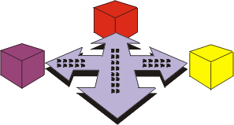

Introduction
to Deployment


The Deployment Discipline describes the activities associated with ensuring
that the software product is available for its end users.

The Deployment Discipline describes three modes of product deployment:
- the custom install
- the "shrink wrap" product offering
- access to software over the internet
In each instance, there is an emphasis on testing the product at the
development site, followed by beta-testing before the product is finally
released to the customer.
Although deployment activities peak in the Transition Phase, some of the
activities occur in earlier phases to plan and prepare for deployment.
The deployment discipline is related to other disciplines, as follows:
- The Requirements discipline produces the Software
Requirements Specifications that consists of the use-case model and
non-functional requirements. Together with the User-Interface
Prototype, the Software Requirements specification is one of the key inputs to developing End-User Support Materials
and Training Materials.
- Testing is an indispensable part of deployment, and the essential artifacts
from the Test discipline are the Test Model, Test Results,
and activities for managing, executing, and evaluating test results.
- The Configuration & Change Management
discipline is referenced for providing the baselined build, and releasing
the product and mechanisms for handling Change Requests that are generated
as result of beta-tests and acceptance tests.
- In the Project Management discipline, the activities
to develop an Iteration Plan and a Software Development Plan are influential
on developing the Deployment Plan. Also, the work to produce a Product
Acceptance plan has to be coordinated with how you manage acceptance test in
the Deployment discipline.
- The Environment discipline provides the supporting
test environment.
Copyright
© 1987 - 2001 Rational Software Corporation
| |

|
 Disciplines >
Deployment >
Disciplines >
Deployment >
 Introduction
Introduction